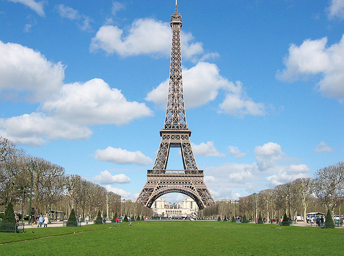
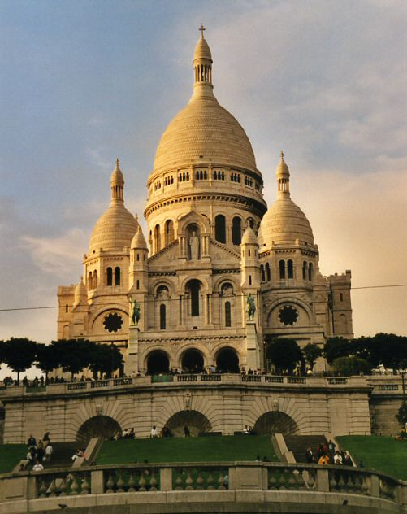
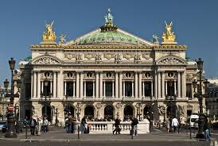
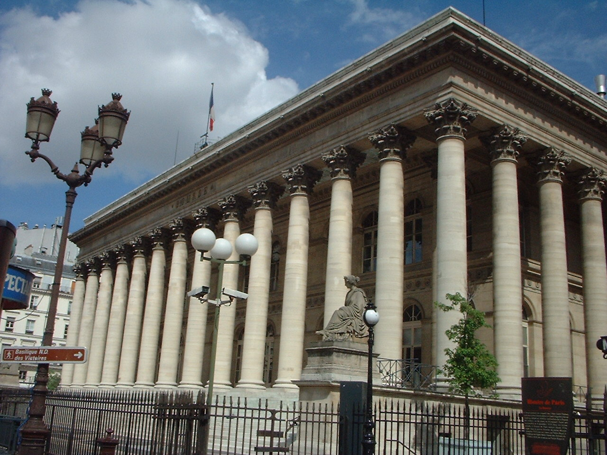
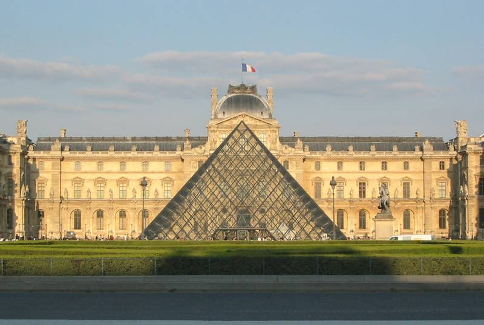

Con motivo de la Exposición Universal de 1889, fecha que marcaba el centenario de
la Revolución Francesa, se publicó un gran concurso en el Boletín Oficial francés.
La apuesta era "estudiar la posibilidad de levantar sobre el Campo de Marte una torre
de hierro, con una base cuadrada, con 125 metros de lado y 300 metros de alto". Seleccionado
entre 107 proyectos, se aceptó el de Gustave Eiffel, empresario, Maurice Koechlin y Emile
Nouguier, ingenieros y Stephen Sauvestre, arquitecto.
Las primeras excavaciones se realizaron el día 28 enero 1887. El día 31 marzo 1889
finalizó la construcción de la torre en un tiempo récord (2 años, 2 meses y 5 días), lo cual
se consideró una auténtica hazaña técnica.
El diseño de la Torre Eiffel
El proyecto de una torre de 300 metros nació con motivo de la preparación de la Exposición
Universal de 1889.
Los dos ingenieros principales de la empresa Eiffel, émile Nouguier y Maurice Koechlin, en
junio 1884 tuvieron la idea de una torre muy alta, diseñada como un gran pilar con 4 columnas
separadas en la base a modo de patas que se unían en la parte superior, unidas entre sí por vigas
metálicas dispuestas en intervalos regulares. La compañía tenía dominado perfectamente el principio
de los soportes de puentes. El proyecto de la torre era una extensión de este principio con una
altura de 300 metros, es decir, el equivalente a la cifra simbólica de 1000 pies de los soportes
de puentes. El 18 de septiembre de 1884 Eiffel patentó “un nuevo diseño que permitía construir
soportes y postes metálicos capaces de alcanzar una altura superior a 300 metros”.
Para hacer el proyecto más aceptable de cara a la opinión pública, Nouguier y Koechlin
solicitaron al arquitecto Stephen Sauvestre para que trabajara en la apariencia del proyecto.
Sauvestre propuso pedestales en las patas recubiertos con mampostería, arcos monumentales
para unir las columnas y el primer nivel, grandes salas acristaladas en cada planta, un diseño en
forma de bulbo para la cima y otros ornamentos para adornar la estructura en su conjunto. Por
último, el proyecto se simplificó, pero se conservaron determinados elementos como los grandes
arcos de la base, que contribuyen a darle su aspecto tan característico.
La curvatura de los montantes se determina matemáticamente para ofrecer la mejor resistencia
posible ante el efecto del viento. Con las palabras de Eiffel: "Así toda la fuerza cortante del
viento pasa por el interior de los montantes de las aristas. Las tangentes a los montantes ubicadas
en puntos situados a la misma altura siempre terminan cortándose en el punto por el que pasa la
resultante de las fuerzas que el viento ejerce sobre la parte de la pata que está encima de los
puntos en cuestión. Antes de coincidir en la cúspide, las patas parecen surgir del suelo, y de
alguna forma moldeadas por la acción del viento”.
La construcción
El montaje de las patas comienza el 1 julio 1887 para terminar veintiún meses más tarde.
Todos los elementos se prepararon en la fábrica de Levallois-Perret cerca de París, sede de la
empresa Eiffel. Cada una de las 18.000 piezas de la torre fue diseñada y calculada antes de ser
trazada al milímetro y ensamblada por elementos de unos cinco metros. Sobre el terreno, entre 150
y 300 obreros, dirigidos por un equipo de veteranos en grandes viaductos metálicos, se encargaron
del montaje de este gigantesco mecano.
Todas las piezas metálicas de la Torre Eiffel están unidas con remaches, modo de construcción
propio de la época en que se levantó la torre.
Provisionalmente las uniones se fijaron en su lugar con ayuda de bulones, remplazados posteriormente
por remaches colocados en caliente. Cuando se enfrían, se contraen asegurando así la fijación de las
piezas unas contra otras. Se necesita un equipo de cuatro hombres para colocar un remache: uno para
aplicar calor, uno para sujetarlo en su sitio, uno para dar forma a la cabeza y el último para
golpearlo con un mazo. Sólo una tercera parte de los 2.500.000 remaches utilizados en la torre se
colocaron directamente sobre el terreno.
Las patas reposan sobre cimientos de hormigón instalados unos metros bajo el nivel del suelo sobre
una cama de grava compacta.
Cada arista metálica reposa sobre su propia pilastra, unida a las demás mediante muros, sobre la
cual ejerce una presión de 3 a 4 kilos por centímetro cuadrado. En el lado del Sena, se utilizaron
artesones metálicos estancos y aire comprimido inyectado lo cual permitía a los obreros trabajar bajo
el nivel del agua.
La torre se montó con ayuda de andamios de madera y pequeñas grúas a vapor fijadas a la misma
torre.
El montaje de la primera planta se realizó con la ayuda de doce andamios provisionales de madera
y de 30 metros de altura, y cuatro andamios más grandes de 45 metros.
Unas "cajas de arena" y unos gatos hidráulicos, sustituidos posteriormente por calzos fijos,
permitieron regular la posición de la carpintería metálica con presión milimétrica.
La unión de las grandes vigas del primer nivel se completó el 7 diciembre 1887. Las piezas se
izaron con ayuda de grúas a vapor que subían a su vez por la torre, utilizando las correderas
previstas para los ascensores.
Sólo se necesitaron cinco meses para construir los cimientos y veintiún meses para ensamblar
la parte metálica de la torre.Les étapes de construction de la tour Eiffel
Es una velocidad récord, si se tienen en cuenta los medios rudimentarios de la época. El montaje
de la torre es una maravilla de precisión, como reconocieron todos los cronistas de la época. Con
fecha de inicio en enero 1887, la obra terminó el día 31 marzo 1889. Gustave Eiffel fue condecorado
con la Legión de Honor en la estrecha plataforma de la cima.
El periodista émile Goudeau visitó la obra a principios de 1889 y describió así el espectáculo.
Les ouvriers de la tour Eiffelmasque photo Los obreros de la torre Eiffel
"Una nube espesa de alquitrán y de hulla se nos metía en la garganta, mientras un ensordecedor
ruido de metal rugía bajo el martillo. Todavía trabajaban en los bulones: unos obreros, encaramados
a un saliente de unos pocos centímetros, se turnaban para golpear los bulones (en realidad eran
remaches) con sus mazas de hierro. Uno podría haberlos tomado por herreros tranquilamente ocupados
en golpear con ritmo sobre un yunque, en alguna forja de pueblo, salvo porque estos herreros no
golpeaban de arriba abajo, verticalmente, sino de forma horizontal y como con cada golpe se
desprendían chispas, estos hombres negros, agrandados por el fondo del cielo abierto, parecían
estar recogiendo relámpagos en las nubes."
El calendario de la construcción
- Los trabajos duraron 2 años, 2 meses y 5 días.
- La primera planta se terminó el 1 abril 1888.
- La segunda planta se terminó el 14 agosto 1888.
- El montaje finalizará definitivamente con la cima, el 31 marzo 1889.
Algunas cifras
- 18.038 piezas metálicas
- 5.300 diseños de taller
- 50 ingenieros y diseñadores
- 150 operarios en la fábrica de Levallois-Perret
- Entre 150 y 300 operarios en la obra
- 2.500.000 remaches
- 7.300 toneladas de hierro
- 60 toneladas de pintura
- 2 años, 2 meses y 5 días de obra
- 5 ascensores